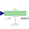

SpeedForced movement of a flange according to a reference speed |

|
Information
This information is part of the Modelica Standard Library maintained by the Modelica Association.
The input signal v_ref defines the reference speed in [m/s]. Flange flange is forced to move relative to the support connector according to this reference motion. According to parameter exact (default = false), this is done in the following way:
- exact=true
The reference speed is treated exactly. This is only possible, if the input signal is defined by an analytical function which can be differentiated at least once. If this prerequisite is fulfilled, the Modelica translator will differentiate the input signal once in order to compute the reference acceleration of the flange. - exact=false
The reference speed is filtered and the first derivative of the filtered curve is used to compute the reference acceleration of the flange. This first derivative is not computed by numerical differentiation but by an appropriate realization of the filter. For filtering, a first order filter is used. The critical frequency (also called cut-off frequency) of the filter is defined via parameter f_crit in [Hz]. This value should be selected in such a way that it is higher as the essential low frequencies in the signal.
The input signal can be provided from one of the signal generator blocks of the block library Modelica.Blocks.Sources.
Parameters (3)
| useSupport |
Value: false Type: Boolean Description: = true, if support flange enabled, otherwise implicitly grounded |
|---|---|
| exact |
Value: false Type: Boolean Description: Is true/false for exact treatment/filtering of the input signal, respectively |
| f_crit |
Value: 50 Type: Frequency (Hz) Description: If exact=false, critical frequency of filter to filter input signal |
Connectors (3)
Used in Components (1)
|
Modelica.Mechanics.Translational.Components Simple vehicle model |